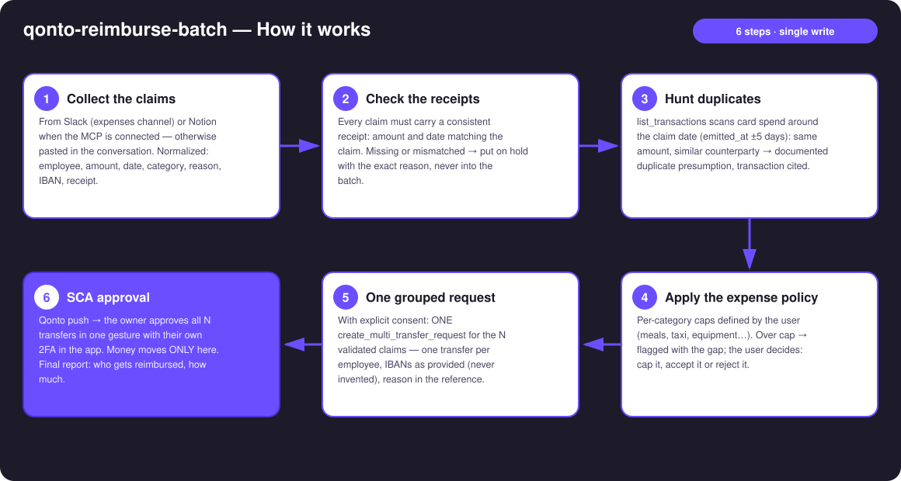
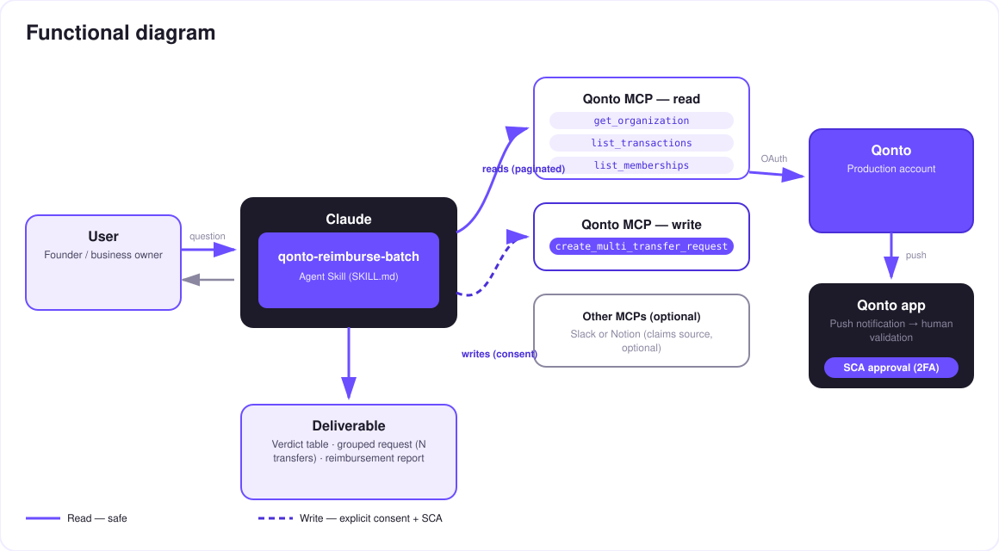

N expense reimbursements, three checks each, one SCA approval — no more spreadsheet.
Teammates pay out of pocket — client dinners, taxis, small gear — and the reimbursement sits in a spreadsheet for weeks. Nobody enjoys chasing it, nobody enjoys checking it. The skill does both (all examples in this doc are invented):
Slack channel or Notion base when the MCP is present — otherwise pasted in the conversation. The core stays 100 % Qonto.
Consistent receipt (amount/date) · not a duplicate of a card expense (transaction cited) · expense policy respected.
The N validated claims → a single create_multi_transfer_request: N pending transfers, IBANs never invented.
Qonto push → the owner approves the whole batch with their own 2FA in the app. Money moves only there.
Would someone use this on a Monday morning? It's the end-of-month expenses ritual — minus the spreadsheet.
| Prerequisite | Detail | Required |
|---|---|---|
| Qonto production account | Adapts to any organization — get_organization first, nothing hardcoded | ✅ |
| Country | Universal (SEPA): EUR SEPA transfers — every Qonto country (FR, DE, ES, IT, AT, NL, BE, PT). Non-SEPA IBAN or non-EUR claim → on hold, stated plainly | ℹ️ detected |
| Qonto MCP connected | Official connector (claude.ai / Claude Desktop), OAuth login | ✅ |
| Employee IBANs | Provided by the claims or a user-maintained employee sheet — the skill never invents an IBAN; a claim without one stays on hold | ✅ |
| Expense policy | Per-category caps (meals, taxi, equipment…) defined once by the user; no policy → stated, the other checks still run | ⭕ recommended |
| Slack or Notion (MCP) | Claims source, detected dynamically; otherwise degraded mode: claims pasted in the conversation | ⭕ optional |

emitted_at ±5 days, not settled_atlist_memberships → flagged, not blocked (contractors exist) · pagination ≤ 50 everywhere
The security model, not a limitation: reads are risk-free; the write requires explicit consent in the conversation and only produces a request. The account holder's own SCA (2FA), in the Qonto app, is what moves money — all N transfers in one gesture, or declined in one tap. Neither Claude nor the MCP can.
| Check | Source | Possible outcome |
|---|---|---|
| Receipt | Attachment/reference on the claim — amount and date confronted with the claim | ✅ consistent · ⚠️ missing or mismatched → on hold, exact reason shown |
| Duplicate | list_transactions: card spend (emitted_at ±5 days, same amount, similar counterparty) + recent reimbursement transfers ("NDF" references) | ❌ documented presumption (transaction cited) → out of the batch, the user decides |
| Expense policy | Per-category caps defined by the user | ⚠️ overage flagged with the gap → cap / accept / reject |
| Claim | Amount | Checks | Verdict |
|---|---|---|---|
| Client dinner | €84.00 | receipt ✓ · no duplicate · under cap | ✅ in the batch |
| Airport taxi | €32.50 | receipt ✓ · no duplicate · under cap | ✅ in the batch |
| Portable screen | €129.00 | already paid with the company card on 06/03 (transaction cited) | ❌ rejected — evidence attached |
Result: one grouped request of 2 transfers in the Qonto app, ready to approve in a single gesture.
| Output | Format | When |
|---|---|---|
| Conversation reply | Markdown tables: verdicts (claim · checks · verdict), batch content, holds | Always — the baseline |
| Grouped Qonto request | N pending transfers (Requests section), batch summary in the note, visible at SCA approval time | Every validated batch |
| Reimbursement report | Markdown recap (who · how much · why rejected, with evidence) — or an HTML artifact when the host renders files | After approval (status via list_requests) |
The ≤ 3-minute demo attached to the PR walks through: the problem → claims collected & checked → the verdicts (one duplicate rejected, cited transaction on screen) → the one-gesture SCA approval filmed on a phone → the final report. All claims in the demo are invented. The detailed shooting script is kept internal (out of the repository).
| Idea | Effort | Note |
|---|---|---|
| Verdict posted back into each claim's Slack thread | Low | Optional multi-MCP — activates when the Slack MCP is present |
| Post-execution reconciliation (tick off outgoing transfers) | Low | Reuses list_transactions + the "NDF" references |
| OCR on attached receipts (amount/date extracted) | Medium | Strengthens check #1 on messy data |
Per-team caps via list_teams | Low | Different policies for sales / tech / management |
| Monthly accounting export of reimbursements | Medium | Pairs with qonto-accountant-handoff |
decline_request afterwards (request_type: "multi_transfers", plural)